Tuesday 13th January We had booked a taxi to take us to Heathrow for 6am. Unlike the last couple of years, we were back to travelling with all our dive gear which would have made public transport a lot harder. We were up at 5 and were just about ready when the taxi turned up at 5:45. We were dropped at Terminal 4 about an hour later and were able to check straight in for our 10:25 Malaysian Airlines flight to KL. Terminal 4 was not too busy at that time of morning. We got through security fairly quickly and went for breakfast at The Olive Tree (the old Wetherspoons)
After eating, we walked to the gate and were able to board by about 9:30. The flight was full but there were three of us in our row of three seats so no extra space for us this time. The flight left on time.
Malaysia Airlines were fairly generous with their wine again and it was another reasonably enjoyable flight. We carried on drinking until just over the half-way point. I then dozed for a couple of hours while Roz watched a film. We were served breakfast a couple of hours before landing.
Wednesday 14th January We landed at KLIA 40 minutes earlier than scheduled at 6:35 local time.
We got the bus back to the main airport and got through immigration and security relatively smoothly. We then had a couple of hours to wait for our onward flight to Penang. This flight also departed on time and by 10:15, we had arrived in Penang. Luggage started appearing almost as soon as we were off the plane and by 11ish, we were in a taxi heading towards George Town. We were dropped at The Granite Luxury Hotel where we had booked a suite for two nights. Our room was not ready when we arrived which was not good news as we had been travelling for about 22 hours by this point and were both totally worn out. However, we were able to check in and wait in the "Relaxation Suite". This was basically a standard suite with the bed removed and the bedroom converted to another sitting room. We had a settee each and were both asleep just about as soon as we were in there.
We were woken about an hour later to be told our room was ready. The room is excellent with a kitchen and lounge area and good views of The Komtar Tower which is just across the road from us. We put our things in the room, Roz had a shower and then we went straight out for breakfast, lunch or whatever meal we are up to now. We had planned to walk to the restaurant that we used to eat at when we stayed the other side of town but found a similar looking place just the other side of the Komtar. No rotis but we both had very good curries. We bought a few things for tonight and returned to the room for a couple of hours sleep.
We were up and about by 5ish feeling remarkably refreshed. After showers, we had a few drinks in the room. Roz had bought a box of wine with her and we had also bought a litre of Bacardi from Heathrow. We went out just before 8. We walked to the top end of Lebuh Chulia and then walked down it looking a some of the places we have stayed on previous visits to Penang. We stopped for a drink at The Pokok and then continued to Sri Ananda Bahwan, our favourite restaurant here.
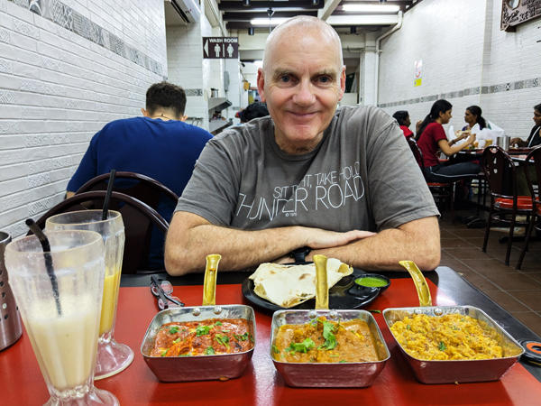
After excellent meals, we walked back to Lebuh Chulia where there is an area of quite lively bars. The drinks were quite reasonable so we had a couple of cocktails before getting a taxi back to the hotel.
Thursday 15th January We had not had too much to drink last night so by 9, we were up and ready to go out for breakfast. We went back to where we had eaten lunch yesterday and finally had our first roti canai of the trip.
We walked back to the hotel and then had an hour or so by the pool. The pool is an infinity pool with superb views of the Komtar tower and the rest of George Town. It is also very good for swimming in. The only downside is that it is North facing and neither the pool or the sun loungers get any sun at all. This is not too big an issue as we could not spend much time in the sun anyway at the moment.
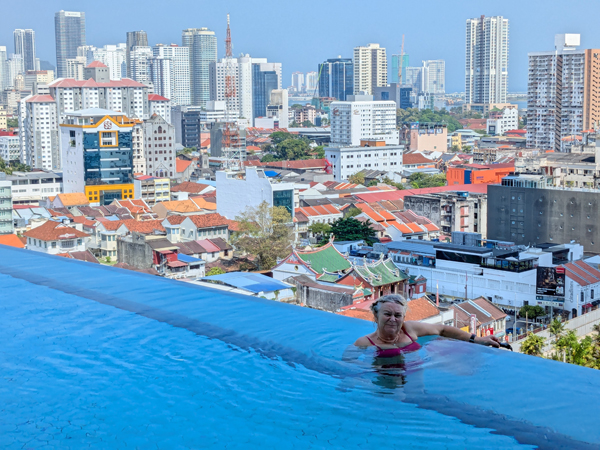
At midday we went out for a walk round the china town area. We wanted to buy antibiotics as these always used to be really cheap in Malaysia but, after eventually finding a pharmacy, we found out that it is no longer possible to buy them over the counter here. We headed to the roti canai place that we always used to have lunch in but found this had closed - things not going well at this point! We headed back to the hotel and stopped somewhere else for lunch instead. Back at the hotel, we returned to the pool for another hour or so.
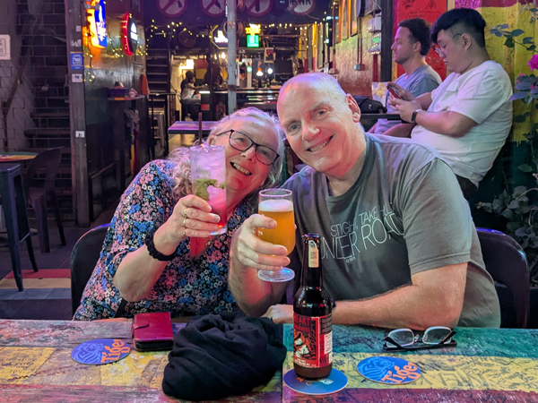
We had a similar evening to yesterday. We started with a few drinks in the room while booking flights for later in the trip. This all took quite a bit of time so I was already starting to feel a bit pissed by the time we left. We got a taxi to Sri Ananda Bahwan where we had very good meals again, this time with beer. After eating, we went to Reggae Bar in the same area we were in last night. They had a very good 7.5% NEIPA of which I had three while Roz had the same number of cocktails. We got a taxi back to the hotel at about 11:30.
Friday 16th January We were a bit later getting up this morning but still went to the same restaurant as yesterday for breakfast. We were due to fly on the 13:45 Firefly flight to Phuket but had already been told yesterday that it would be leaving an hour later than scheduled. After eating, Roz went back to the pool while I stayed in the room.
We checked out at midday and ordered a Grab taxi at about 12:30. The traffic was a bit heavier than it was going the other way but we were still at the airport with plenty of time. Check-in was very quick and we had an hour or so to wait for our flight which left on time (i.e. at about 14:45)
We got through immigration reasonably smoothly and our luggage was waiting by the time we got downstairs. We had pre-booked a taxi to take us to Nai Yang. We had a bit of a wait for the driver to turn up but by about 4pm, we were dropped off at Isara Resort. We had not stayed here before but thought we should try somewhere new as Nai Yang Beach Resort is frequently full or too expensive. Isara is a much smaller, quieter resort with just 16 rooms. We have a large room a living room type area and a balcony. All seemed quite nice on first impression.
After a bit of unpacking, we went out to buy ice-creams and drinks. We returned to the room and went for a bit of a swim before showers. We then started getting some of our dive gear ready for tomorrow.
At about 6:30 we walked down and had a look round the beach area. We are staying almost immediately behind the Nai Yang Beach Resort, about a 10 minute walk from the beach. There had been a few changes in the area in front of the resort, mainly the addition of a couple more super-markets. Neither of us were bothered about eating out this evening so we bought take-away fried rice and returned to eat it on our balcony. Did not do a lot else for the rest of the evening apart from getting the cameras ready for tomorrow.
Saturday 17th January After almost four years, it was time to start diving again. I had passed a dive medical in London in November and we had altered this trip so that it would include a one week live-aboard to The Similans. We go on the live-aboard in a weeks time but had decided it would be a good idea to do a couple of days diving to get used to everything again. The diving from Nai Yang is not the greatest but it is easy shallow diving which is exactly what we need after such a long break.
We were up by 7 and went for breakfast which was included with our room. After eating, we got our gear together and walked down to Sea Bees. This was our first time diving with Sea Bees although we had dived from this dive centre fifteen years ago when it was called Paradise Dive. We got there early so had a bit of waiting around but at about 9, we made our way over the road and onto the beach where the boat was waiting.
We were in a group of four divers plus the guide although I think we were the only two paying customers. One of the other divers was temporarily working for Sea Bees and the other was a relative of the owners. There was one other group of three divers as well as four snorkellers on the boat.
First dive was at Koh Waeo about 20 minutes away. The dive was OK but the main thing was that we could both complete it without any problems. We are both a bit rusty when it came to using our cameras but the actual diving all felt very straightforward as soon as we were in the water. The second dive was at Stone Coral Garden, a site we had probably dived before but with a different name. All in all, the dives could not have gone much better.
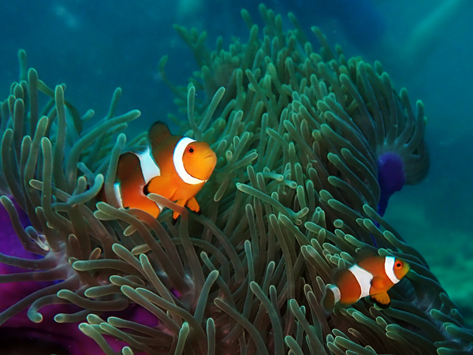
We returned to the beach and washed our gear at the dive centre. We decided to do another couple of dives on Monday so left everything there and walked back to Isara. We had showers and went and had lunch in one of the supermarkets on the main road.
After eating, Roz went back to the pool and I walked out to the airport. We had planned to hire a car for a couple of days prior to getting on the live-aboard and have a look round the Phang Nga area before driving up to Khao Lak. However, it was not clear whether or not I would need an international driving permit to pick up the hire car and I thought should go and find out before we booked anything. It turns out that you do not need one to pick up the hire car but it is illegal to drive without one in Thailand. This was quite frustrating as it is totally pointless if you have a UK license and would appear to be law created purely to extract money in fines from people who don't realise it exists. Anyway, it meant that we will not be hiring a car and need to change our plans for the three nights from next Wednesday.
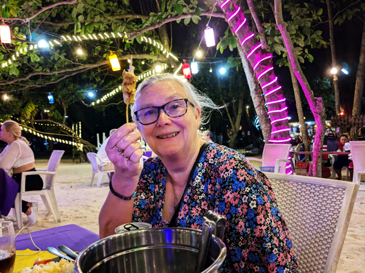
We started drinking at 7. A normal Thai session. We had a few drinks on the balcony before walking to Rotcharin Seafood. We drank a half bottle of Sang Som with the meal and then went to look for somewhere showing the Sunderland v Palace game. Tony Bar just round the corner from the restaurant already had it on when we got there. They did not have small bottles of Sang Som so we bought a litre for ฿1200. This did not work out too badly as it included ice and diet coke and kept us going until the end of the game. We watched the game with a local Sunderland supporter and I don't remember much about walking home!
Sunday 18th January We did not do quite as much today as yesterday. We were later going to breakfast and then did not do a lot all day except for lying by the pool or in the room. We did not bother with lunch and did not make it out of the resort until about 6:30 when we went out to eat. Even then, we could not be bothered to walk to the beach but ate at Gold Digger Restaurant just round the corner from where we are staying. We walked out to the main road to stock up on soft drinks and snacks for tomorrow but that was it for today.
Monday 19th January Today we did a repeat of the two dives we did on Saturday. We got to the dive centre at 8:30 and headed off to the boat again just after 9. There were a similar number of people on the boat although everyone was diving today. We were guided by Ham again.
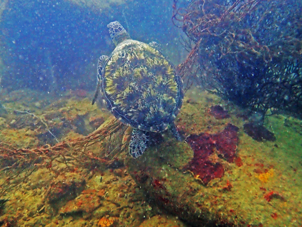
The dives were both enjoyable enough again, particularly the second. Although this was probably not quite as nice a site as Ko Waeo, Roz managed to spot an octopus and Ham found a green turtle. It was not the best turtle sighting we have ever had but it was good to see one again anyway. When we got back to the beach, we left most of the dive gear with the dive centre and returned to the room for showers.
We had lunch outside the supermarket and then had a couple of hours at the pool. We went out for a walk at 5ish as Roz wanted to buy something for her ears which are slightly blocked/swollen after this mornings dives.
We started drinking again at 7. We had a few on the balcony before walking to the beach. Rotcharin Seafood had run out of food apparently so we could not eat there. Instead, we walked to Bank Restaurant a bit further along the beach. This did not work out too badly as the food was good and they were happy to leave us sat on the beach drinking when the restaurant closed.
Tuesday 20th January Another quiet day without a lot to do. It was a bit cooler today than it has been so we were able to spend quite a bit of time at the pool. We did go back to collect our gear from the dive centre and Roz went out to get her nails done in the evening but that was about it for the day. When Roz got back, I went out and got take-away fried rice for tea.
Wednesday 21st January We went to breakfast at 8:00 and then, after a bit of packing, went to the pool for a couple of hours. When we had discovered that we would not e able to hire a car, we had instead booked three nights at The Naithonburi Resort at Nai Thon beach. This is the next beach along from Nai Yang heading away from the airport and somewhere we had not been before.
We checked out of Isara at midday and ordered a Grab taxi to take us to Nai Thon. We had a bit of a wait for the taxi but once there, it cost ฿200 instead of the ฿500 that all the taxi companies were charging. We got to The Naithonburi by about 12:30.
We were told that our room would not be ready until 2pm. We left our luggage in reception and went for a look around the area. The beach was very nice and there was a good selection of shops and restaurants although there was not much evidence of places that we would be able to eat at on the beach. We had chocolate pancakes for lunch and returned to the resort. We got towels and went to sit by one of the pools while we waited for a room.
While Isara had only had 16 rooms, The Naithonburi was a fair bit bigger with about 400.It has a couple of very nice pools with plenty of space covering a huge area. We were shown to our room at 2. It is another big room with a balcony with views of the back pool and also of the surrounding hills. All very nice for a few days. After unpacking, we returned to the front pool for the rest of the afternoon.
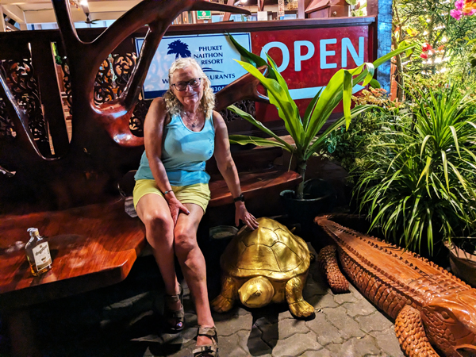
We had a few drinks in the evening. As usual we started on the balcony. There was still no sign of anywhere to eat on the beach when we went out so we ate at Wiwan's Restaurant on the other side of the road. Despite not being on the beach, this was a very nice restaurant with excellent food. They also sold Sang Som sets of which we managed to consume two before walking back to the hotel.
Thursday 22nd January We were not too hungover today so after a very good breakfast, we were able to spend most of the day by the pool. Apart from a short walk out to buy provisions, did not do too much else all day.
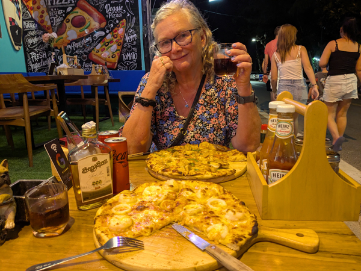
In the evening, after our balcony drinks, we went out for our anniversary pizza. There are two pizza places in Nai Thon and we chose Pizza house 57. This proved to be a good choice as it was a nice place to sit, they let us bring our own Sang Som and we had very good pizzas.
Friday 23rd January Another day spent mainly lying by the pool. We had leftover pizza for lunch and did not leave the resort until we went out to eat in the evening. We ate at Wiwan's and were back in the room not long after 8:30.
Saturday 24th January We were awake early and were in breakfast by about 8:30 having already reserved our sun-loungers for the day. We spent most of the rest of the morning by the pool. We returned to the room at 11:15, finished packing and checked out by midday. We left most of our luggage in reception and returned to the pool until 3pm. We had booked a taxi to take us to the airport at 3:30 and it turned up about 15 minutes early. By 3:30 we had been dropped at International Arrivals where we were due to be picked up by Aggressor Adventures.
Back in November when I passed my dive medical we had booked ourselves on a one week live-aboard to the Similans. We were picked up from the airport at about 4:30 and driven up the the Tap Lamu pier. Just before 6pm, we boarded the Thailand Aggressor. We were shown to our cabin and set up our equipment ready for tomorrow. After a bit of unpacking, we went upstairs where we were introduced to the crew and other passengers. We had a few briefings about the boat and the diving and also had our evening meal.
The boat can take 16 customers but there are just 13 on board so there is plenty of space everywhere, particularly on the dive deck. There is a German couple, a Canadian couple one English bloke and everyone else is American. All the crew are Thai.
We had a couple of glasses of wine with the meal but most people headed off to bed as soon as the final briefing was completed.
Sunday 25th January We were up just before 6 and headed upstairs for breakfast 1. We were given a dive site briefing and then split into two groups. We were put in Group A with DJ (American), Alex (English) and Malik & Genevieve (Canadian) and today we were diving first with Bank as our guide.
After the briefing, we went downstairs and got our gear on. Most of the diving on this trip will be from RIBs. Our group all got on the first one and were taken to the dive site - Zodiac - a few minutes away. We all got down without too many problems and it was a very good dive to start the trip. As soon as we got in the water, the difference between here and Nai Yang was huge. The visibility was superb in comparison and there were a lot more fish around. As well as all the usual reef fish we saw a couple of morays and a Napoleon Wrasse as well as some of the bigger things like barracuda and jacks. The dive times on this trip are supposed to be limited to 50 minutes due to trying to do 25 dives in six days, but we were underwater for 55 minutes so could not really complain.
Back on board, we had breakfast 2 and then the briefing for the second dive. We were back in the water by 10:30, this time at Shark Fin Reef. This was a more typical Similans site with plenty of large boulders. There were still a lot of fish - more than we both remember from our last trip to the Similans. Lunch was served at midday.
Dive 3 was at Boulder City. As the name suggests, this was more boulders. A very nice dive with the added bonus of the first hawksbill turtle of the trip. Roz spotted it quite late in the dive as it was going up for air. We waited for it to come back down and she was able to briefly get quite close to it. Fourth dive was at Honeymoon Bay. The start of this was not great but it did improve as we got into the shallower area. All in all a very enjoyable days diving.
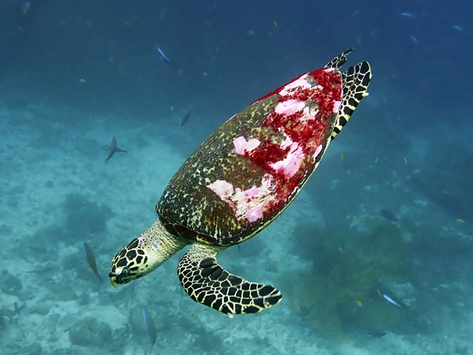
There was due to be a night dive today but we were told at lunchtime that this had been cancelled. We were told that this was due to us all being too tired which seemed an unlikely reason. It was probably more due to one of the RIBs needing a spare part. Instead of a night dive we were taken back to a beach on Similan #8. Roz and I were not that bothered about going to the beach anyway but by the time we got there, the sun was already setting so we stayed on the boat while most of the others went there for an hour or so.
We had our evening meal when everyone returned. We spent the evening talking to Carsten and Katja (the German couple) and were about the last ones to go to bed just before 9.
Monday 26th January A similar day to yesterday as we remained in The Similans. Instead of diving with Bank, we had Bobby the "cruise director" guiding us for the first dive and also had Ja in the water taking photos. Dive 1 was at West of Eden. This was a very nice dive and we saw two hawksbill turtles.
We were guided by Ja for the second dive at Deep Six. Roz spotted another hawksbill as soon as we entered the water. Ja was helping one of our group who was having trouble descending so Roz and I went straight down to it and were able to get a few photos before having to move on. The rest of the dive was also very nice. There were a few swim-throughs and at the exit to the last one, there was a small white-tip reef shark.
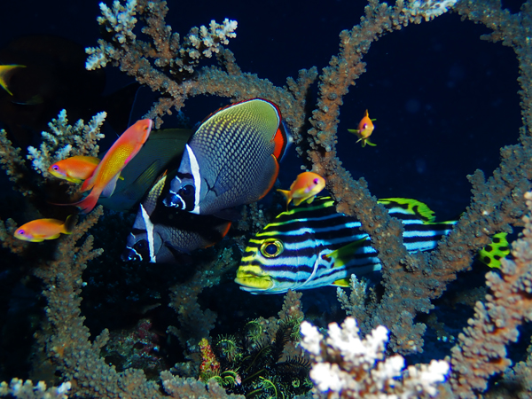
Dive 3 was also led by Ja and was at Beacon Reef. This was an easy dive drifting along the reef. There was not anything really spectacular about the dive but the coral and the number of fish particularly towards the end made it all very pleasant. This was also the longest dive of the trip so far (58 minutes) as we were able to wait underwater while waiting for the tender to come and pick us up. Very enjoyable all round.
Dive 4 was probably not as good as the previous ones today. The sun was starting to go down so there was not as much light. There was a bit of current at the start but although it was still a nice enough dive, there did not seem to be as much to see as on the others. We did see the first decent nudibranch of the trip and Roz did get a brief glimpse of another turtle although I missed it.
Today, we were able to do a night dive although it was all a bit shambolic. There were nine divers, all of our group plus three from Group B, all led by Bobby. This was too many divers for a guided night dive and we jumped in just about on top of a group from another boat which added to the confusion. We jumped from the back of the boat and then went along the reef at quite a speed before being bought back to the boat on the RIB. No-one really saw anything of interest and given that it was only a 30 minute dive, we could easily have just swam back to the boat. At least the hot chocolate on our return was good!
We had showers and went up for the evening meal which was very good again. Still back in the cabin by 9pm.
Tuesday 27th January Last two dives in the Similans today before heading North. First dive of the day was at Elephant Head Rock. We have dived here before but I do not remember the dive site being so good. Group A was back to diving with Bank today and we were first in the water at 7:00. As soon as we went down we saw an area with four octopus. I only saw three of them but apparently there was a fourth. After that, the dive was all about the spectacular swim-throughs and rock formations. There were a lot of fish around and the whole dive was very enjoyable.
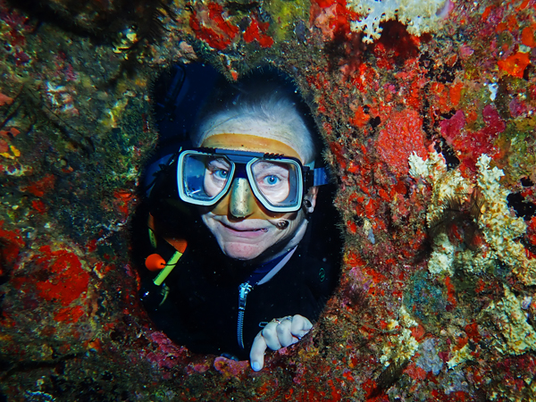
The second dive was at Breakfast Bay (also known as Three Trees). The highlight of this dive was probably the huge barrel sponge at the beginning. We spent quite a bit of time over sand, I think looking for guitar sharks but there were plenty of interesting pinnacles along the way.
As we had lunch after the second dive, we left The Similans and started making our way towards Koh Bon. We arrived at Koh Bon Bay at about 13:30 and started gearing up straight away. The first dive here was at Koh Bon Ridge. This was quite enjoyable and a change from the granite boulders of The Similans. However, it was hard not to think about previous visits here where we have been surrounded by manta rays for just about the whole dive.
We were not overly enthusiastic about dive 4. We were diving Koh Bon Bay and had a very poor dive the last time we did this site. However, it turned out to be the best dive of the day. It started slowly as we went round the bay but as we got round towards the ridge, there was suddenly a lot of activity. There was a bit more current there and a lot of jacks, trevally and tuna hunting all around us. There were plenty of reef fish as well making it quite a spectacular 20 minutes or so to end the dive. Bank also managed to find a Maldivian Sponge Snail which we had been told about in the briefing.
The night dive tonight was a lot better than last nights. There were ten of us this time led by Ja but there were no other divers in the water so it was easy enough to keep the group together. There was a lot more to see here. There were a lot of morays out and about and we had a large barracuda that seemed to join the group for most of the dive. Gen and Malik found another Maldivian Sponge Snail and I found a stone fish towards the end of the dive.
As soon as everyone was on board after the night dive, we began the journey North to Koh Tachai. We had a few glasses of wine again with the evening meal and were back in the cabin just after 9pm. Arrived in Koh Tachai just after 10.
Wednesday 28th January Today was supposed to start with two dives at Koh Tachai Pinnacle. However, when we woke up, there were seven or eight dive boats on the pinnacle so Bobby decided that for the first dive we would do Koh Tachai reef instead. This was a bit disappointing but it turned into being a very nice dive. There were two octopus at the start of the dive that were very happy to be photographed and the rest of the dive was all quite pleasant and relaxing compared to some of the dives we have done at the pinnacle. The shallow area at the end of the dive was particularly nice.
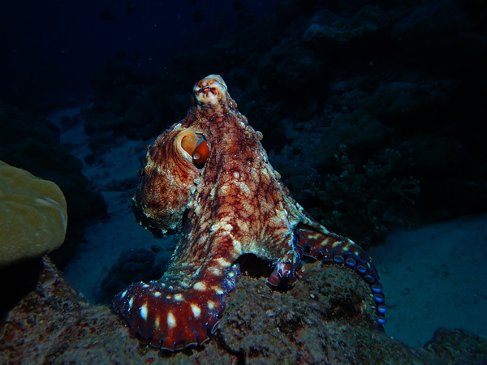
We had a bit of a wait after breakfast for the second dive so that we could dive the pinnacle at slack tide. This worked out well as it was one of our better dives here. We were led by Bobby which was a bit unfortunate as I do not really rate him as a dive guide. He told us we all had to go down holding the line but it was a lot easier to go straight down from where we were dropped. We all made it down safely and met up at the top of the pinnacle. From there, he seemed to want to get round the whole site as quickly as possible. He had us all swimming into current to get to the big school of barracuda which was very spectacular and then left there very quickly to show us a few lobsters. Despite this, it was a very spectacular dive with a lot going on as usual. The barracuda were superb and there were jacks, tuna and giant trevally swimming round us for most of the dive.
After about 40 minutes, Bobby had to take Malik up as he had used a lot of air dashing to the barracuda. The rest of Group A were left with Ja and things became a lot more sedate after that. We were able to just stay at the top of the pinnacle and watch what was going on around us. We also managed to make the dive last for more than an hour for the first time on this live-aboard.
After the dive, we continued our journey North to the Surin Islands. We arrived at South Surin at around 3pm and got in the water straight away. We dived first at Ao Pakard. We were led by Bobby again. However it was a really nice dive site with very spectacular hard coral formations. Bobby went on ahead with Malik and Gen while the rest of us took our time and followed at some distance behind. A very enjoyable dive.
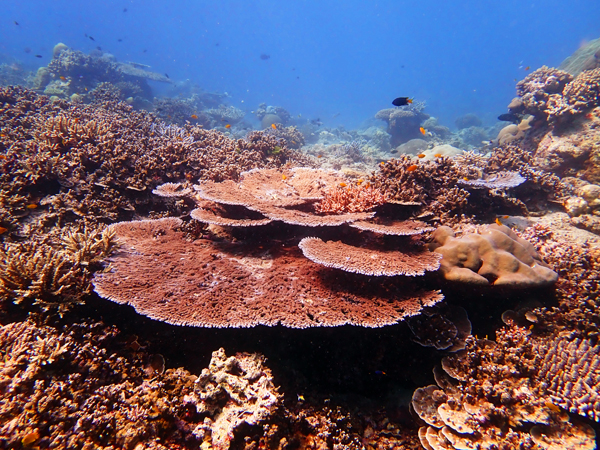
Dive 4 of the day was with Ja at Pineapple Bay. Despite being told that this was a wall dive, it was a very similar sloping reef to the previous site. The coral would probably have been as spectacular as the previous dive but the sun was already going down when we went in the water and there was not as much light. We did have the bonus of two hawksbill turtles swimming past us towards the end of the dive.
Dinner tonight was unbelievably good steak. We had a few glasses of wine with the meal as usual and were back in the cabin by 9.
Thursday 29th January Today we were due to do four dives at Richelieu Rock which was about an hour away from South Surin where we had moored overnight. We were woken by the ships engines starting just before 5:00 but then we did not seem to be going anywhere. At 6:00, we were still in the same place due to the ship's anchor being tangled in abandoned fishing gear. Bobby eventually managed to free it and by 6:30 we were on our way.
We arrived at Richelieu slightly later than planned and did not get into the water for the first dive until 7:40. The dive, however, was superb. Group A was first in the water and we were diving with Bank again. We also had Ja in with us as she was taking photos. We all went straight down to the sea-horse at about 24m although it was not in a great position for being photographed. While we were still queuing to take photos, Bobby came along with Group B. There was then a bit of confusion as Bank let them look at it before going back for a second look himself. When Group B and Ja moved on, most of our group went with them leaving me, Roz and Bank to do most of the dive on our own.
This could not have worked out much better for us. We not only avoided our group but managed to stay clear of most of the other divers on the site. Bank was able to point out a lot of smaller stuff to us to look at when not looking at all the usual activity going on out in the blue. Excellent dive to start the day.
Dive 2 was at 10:45. This was very good again. The amount of fish on this site is incredible and you don’t really need to go looking for anything special, you could easily spend the whole dive in one spot watching everything going on around you. Our group managed to stay together on this dive. The highlight of the smaller stuff was the first ghost pipe fish we have seen for a few years. Unfortunately, my camera battery had gone flat just before we came to it.
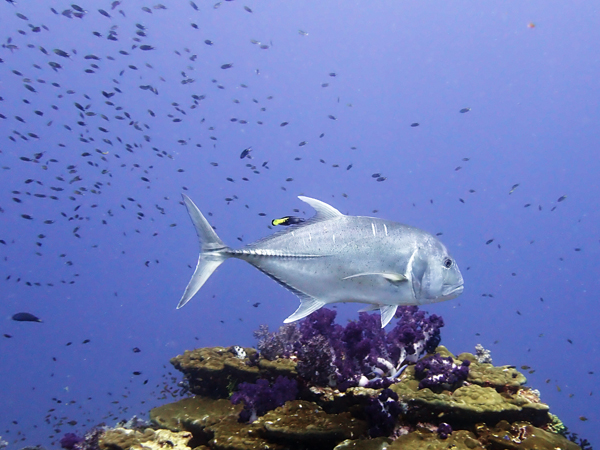
Dive 3 was similar again. We went straight down to the sea-horse which this time was far happier to have its photo taken. All the usual stuff here plus an excellent octopus towards the end of the dive. The fourth dive here was as good as any of the others. Bank spent a lot of time looking for small things while the rest of us just watched all the fish swimming around us. The first part of the dive was incredible and the end up in the shallows also very good. All in all, a very good days diving!
It was a relatively early end to the diving today and we were able to watch the sunset as we made our way back to South Surin Island. Dinner was served at 7pm. Once again, a very good meal with a few glasses of wine. Back in the room by 9 as usual.
Friday 30th January First dive today was at Torinla Island just South of South Surin where we had stayed the night. This was a nice enough dive if not quite as spectacular as some of the sites on the previous days. Group A was led by Ja again. The site was mainly boulders at about 10 - 15 metres with sand sloping down deeper. We spent quite a bit of time in the deeper sandy area looking for Picachu nudis and Ja did eventually find one.
After the dive we began heading back down South. We are returning to Tap Lamu this evening with a couple of stops on the way. First stop was Koh Tachai where we dived the pinnacle again. This was probably the quietest we have ever seen this dive site. There was no current at all, not that many divers and probably not as many fish as usual. It was all very enjoyable and we got to see a hawksbill turtle eating a jellyfish. Sadly, it was a bit higher than us so we did not go up to see it too closely.
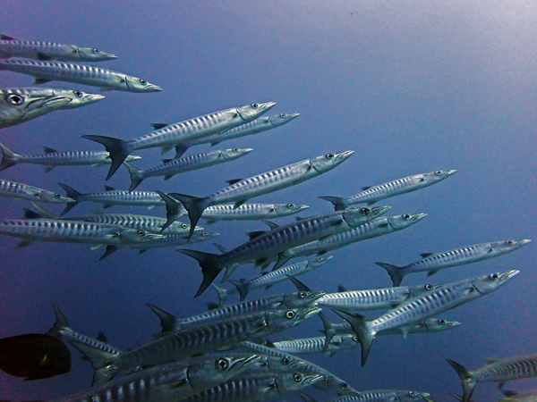
The third dive of the day and the last of the trip was back at Koh Bon Reef. This was probably not the best dive of the trip but was still thoroughly enjoy enjoyable. There was no-where near as much activity around the ridge as when we were here a few days ago but there were enough fish around and we found a small sea-snake at the end of the dive. A nice easy dive to end the trip with.
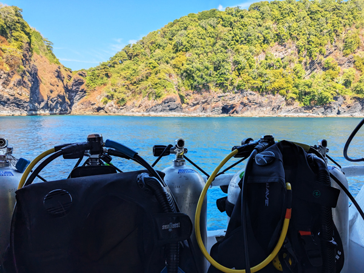
We have really enjoyed all the diving on this trip. Three months ago I still did not know whether or not I would ever dive again. The fact that I have been able to complete all 25 dives on a live-aboard is beyond what I could reasonably have hoped for. The diving on this trip has been very good but I've enjoyed even the not-so-good dives. There has been no problems at all diving despite the four year break and it has just been unbelievably good to be back underwater again.
Back on the boat we washed our gear and got it out in the sun in an attempt to dry it all out by tomorrow. We then had a few hours to kill as the boat made its way back to Tap Lamu. I had my first beer of the live-aboard and we spent the rest of the time sorting out cameras, downloading photos and sitting around chatting.
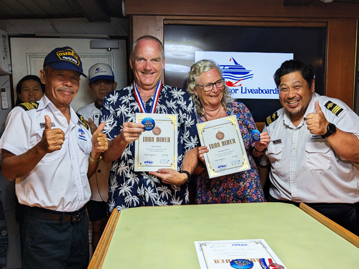
At 7pm we had a bar-b-q meal and awards presentations. After eating, medals and certificates were given to those of us who had completed all 25 dives. Eight of the thirteen divers on the boat achieved this including all of Group A. We all said our thank yous to the staff, paid our bills and were given glasses of Prosecco. Roz and Katya managed to get through most of a second bottle between them while I had a few extra glasses of Thai white wine. It was a very enjoyable evening to end the trip although still not too late a night.
Saturday 31st January We were awake before 6:00 and after packing up the remainder of our luggage, we went up for breakfast. The boat had been moored a short distance away from the pier so we had docked by the time we got upstairs. After eating we said goodbye to the staff and half the group who were in different transport and were then taken by mini-van back to Phuket. By about 9:30 we were back at Isara Resort at Nai Yang.
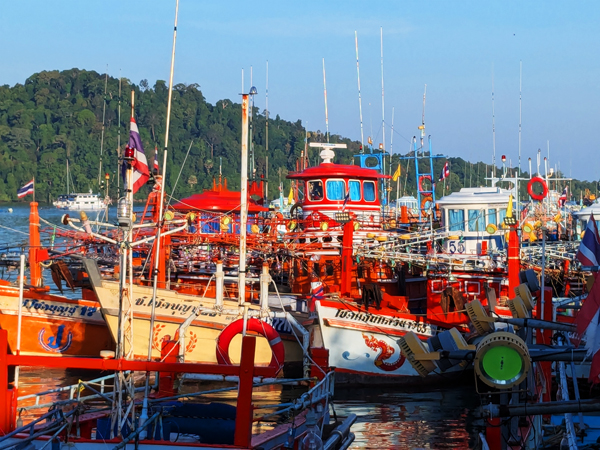
Our room was not ready when we arrived but the previous occupants had already checked out so we were able to get into the room about 30 minutes later. We waited by the pool and spent most of the rest of the day there. We walked to the beach for lunch (banana and chocolate pancakes and banana shakes) before returning to the pool for the afternoon.
In the evening, we had a couple of drinks on the balcony while looking at some of the photos from the last week. We ate at Gold Diggers and got through slightly more Sang Som than we intended to. We did not manage to stay awake for the football.
Sunday 1st February We got up, had breakfast and finished packing and put our big bags into the luggage room. We had booked a taxi for 9:30 and it turned up a few minutes early. We were dropped at the airport, went straight through security and were in the departures area by 9:45. We then had a two hour wait for our Air Asia flight to Don Mueang. We departed on time and got to Don Mueang at about 1:20pm.
After a long walk through the airport, we had a wait of about 10 minutes for a taxi and then a journey of 55 minutes to the Mövenpick Hotel on Sukhumvit 15. We had not stayed here before but were tempted by the free chocolate hour. We checked in dropped our stuff in the room and went out to get something to eat. We ate at a food court on Sukhumvit Road and had the spiciest meals we have had since getting to Thailand. We were not able to buy alcohol anywhere today before 6pm due to there being elections. We returned to the room to wait for chocolate hour to start.
Chocolate hour was a very healthy experience with an all you can eat selection of chocolate cake, chocolate pudding, chocolate biscuits and a chocolate fountain. After we had eaten more than enough chocolate, we returned to the room for showers.
We went out at 6 when everywhere was serving alcohol again. We went first to "The Old German Beerhouse on 11". There was a bit of confusion about the location of this as it was not in the same place as when we went in it a couple of years ago but we eventually worked out that there are two of them very close together. We had a wheat beer in there and then crossed Sukhumvit to Soi 8 where there were a couple of craft beer bars.
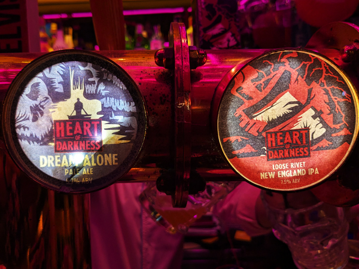
We had a few drinks in The Brewhouse and then went to The Tipsy Tap where they had the same 7.5% IPA that I had been drinking in Penang (Heart of Darkness - Loose Rivet). A couple of pints of this each and things were starting to get a bit messy. We stopped for one in "The Old German Beerhouse on 13" while watching the end of the football and were back in the hotel just after 11.